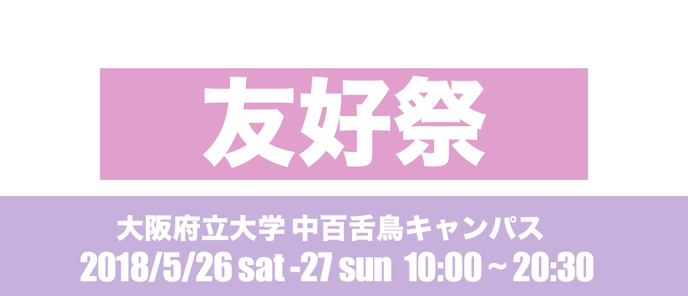
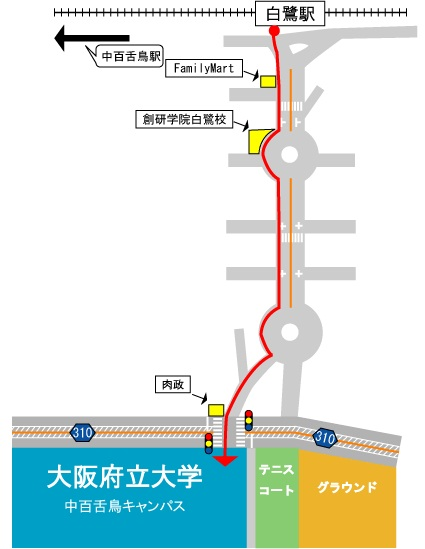
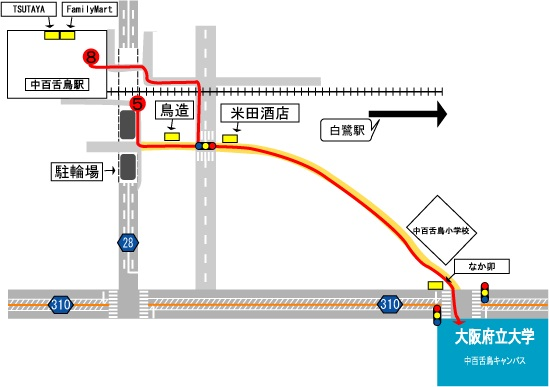

大阪府立大学第57回友好祭実行委員会

大阪府立大学第57回友好祭実行委員会
友好祭とは毎年5月下旬に開催される大阪府立大学の大学祭です。今年で第57回を迎える友好祭実行委員会は、「本祭典の開催を中心に、大学・地域の活性化に繋げる活動を委員一丸となって展開し、その過程で様々な人と友好の輪を拡げ、楽しさの共有を行う」という基本方針を掲げ、一年を通して様々な活動を行っております。
＊南海高野線 白鷺駅から徒歩約8分

＊南海高野線・泉北高速鉄道 中百舌鳥駅から徒歩約15分
＊地下鉄御堂筋線 なかもず駅から徒歩約15分
 ＊南海本線 堺駅より
南海バス北野田駅行31・32系統乗車 府立大学前下車(約20分)
＊JR阪和線・南海高野線 三国ヶ丘駅より
南海バス北野田駅行31・32系統乗車 府立大学前下車(約10分)